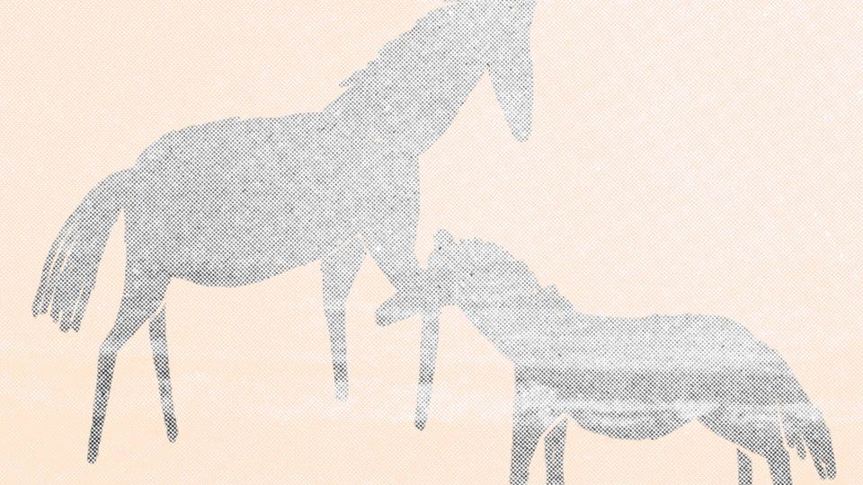

| 文章 | 章节 | 下一项 |
The Unspoken
by Ada Limón

If I’m honest, a foal pulled chest-level
close in the spring heat, his
every-which-way
coat reverberating in the wind, feels
akin to what I
imagine atonement might
feel like, or total absolution. But what
if,
by some fluke in the heart, an inevitable
wreckage, congenital and unanswerable,
still comes, no matter how attached
or how gentle every hand that
reached
out for him in that vibrant green field
where they found him
looking like he
was sleeping, the mare nudging him
until she no longer
nudged him? Am I
wrong to say I did not want to love
horses after
that? I even said as much driving
back from the farm. Even now, when
invited to visit a new foal, or to rub the long
neck of a mare who wants only peppermints
or to be left alone, I feel myself resisting.
At any moment, something
terrible could
happen. It’s not gone, that coldness in me.
Our mare is
pregnant right now,
and you didn’t even tell me until someone
mentioned it offhandedly. One day, I will
be stronger. I feel it coming. I’ll step into
that green field stoic, hardened, hoof first.
This poem appears in the January/February 2022 print edition. When you buy a book using a link on this page, we receive a commission. Thank you for supporting The Atlantic.
This article was downloaded by calibre from https://www.theatlantic.com/magazine/archive/2022/01/ada-limon-the-unspoken/620848/
| 文章 | 章节 | 下一项 |